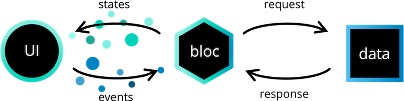

Proof of concept¶
Un Proof Of Concept (POC) est un processus qui permet de commencer le travail de diplôme en testant les technologies qui seront utilisées dans le projet. Il permet également de tester la faisabilité du projet, et de déterminer si les technologies choisies sont adaptées. L'idée est de réaliser un projet simple, mais qui implémente les fonctionnalités du projet qui ont le plus de risque de causer des points de friction.
Objectifs¶
Réaliser une application qui permet à l'utilisateur de se connecter à une API, à l'aide d'une application Flutter. Cela permettra de tester l'autorisation entre le client et le serveur, qui est un point qui m'a toujours rendu perplexe.
L'API sera sécurisée avec les mécanismes classiques du web (JWT, HTTPS, CORS). La connexion utilisateur sera également possible avec un jeton TOTP (Time-based One-Time Password), et qui sera possible de relier à une application d'authentification comme Google Authenticator ou Authy.
Les objectifs de ce POC sont donc les suivants:
- Tester Flutter
- Tester Typescript
- Tester la communication entre le client et le serveur
- Implémenter une API sécurisée
- JWT
- CORS
- Authentification TOTP
Technologies¶
Les technologies utilisées seront les suivantes :
- Flutter pour la partie client
- Typescript pour la partie serveur
- Bun En tant que remplacement plus rapide de Node.JS
- Fastify pour le serveur HTTP et la gestion des routes
- Prisma pour la gestion de la base de données
Journal de bord¶
Jeudi 30 novembre 2023¶
Aujourd'hui, je commence à planifier le POC de mon travail de diplôme. J'ai décidé de partir sur une application mobile, car cela me permettra de tester les technologies que j'ai choisies, et de voir si elles sont adaptées à mon projet. Ces quelques semaines vont également me permettre de découvrir Flutter, et de confirmer mes compétences en TypeScript : ayant déjà réalisé une API en cours de PDA dans les technologies que je voulais utiliser, je vais pouvoir creuser le framework de routes que j'ai décidé d'utiliser.
J'ai décidé d'utiliser Flutter pour le client. Je voulais tout d'abord utiliser React Native car je voulais m'entraîner pour mon travail de diplôme, mais je me suis rendu compte que la bibliothèque de chiffrement que je voulais utiliser pour le projet ne fonctionnait pas sur ce dernier, la bibliothèque Signal utilisant WebCrypto qui est uniquement disponible sur navigateur ou NodeJS. Mes multiples tentatives de polyfill et d'installation de dépendances externes n'ayant menées à rien, j'ai décidé de choisir Flutter, pour son expérience développeur, son support, son développement cross-platform et sa bibliothèque Signal native.
J'ai également décidé d'utiliser TypeScript pour le serveur. Ayant déjà utilisé ce dernier auparavant (notamment pour l'API du cours de PDA, ainsi que quelques projets personnels), je suis confiant avec ce langage et pense qu'il est adapté à mon projet. L'écosystème de TypeScript étant également très développé, je pense que cela me permettra de gagner du temps afin de me concentrer sur le développement des fonctionnalités de l'application.
Prisma sera mon ORM de choix pour ce projet. J'ai aussi utilisé ce dernier pendant le développement de l'API du cours de PDA, et j'ai été très satisfait de son utilisation. Il permet de gérer la base de données de manière très simple, il gère les migrations, les seeds ainsi que les relations entre les tables avec un seul format de fichier (le schéma de la base de données). Les différentes parties de la bibliothèque sont même générées avec ce dernier, ce qui permet d'avoir une API typée et qui est toujours à jour avec le schéma de la base de données.
Je vais finalement utiliser Bun pour le développement ainsi que l'hébergement de l'application : ce dernier est récemment sorti en version 1.0.0, et est donc stable. Il est également très rapide, offrant des performances supérieures à NodeJS et permet de développer des applications en TypeScript sans avoir à passer par le transpileur officiel. De plus, le runtime lui-même offre une API permettant la réalisation d'un serveur de WebSocket, ce qui me permettra de ne pas avoir à utiliser une bibliothèque externe quand je réaliserais mon travail de diplôme (il sera également utilisé dans le projet de PDA), afin de pouvoir gérer la communication en temps réel. Ce dernier offre également des performances supérieures à Socket.io ou autres bibliothèques similaires.
Après avoir choisi les différentes technologies, je décide de m'attaquer à la planification des routes : j'ai pensé à réaliser une API REST, avec les routes suivantes :
| Méthode | Route | Description |
|---|---|---|
| POST | /users | Permet à l'utilisateur de créer un compte |
| GET | /users/me | Permet à l'utilisateur de récupérer son profil |
| DEL | /users/me | Permet à l'utilisateur de supprimer son compte |
| POST | /tokens | Permet à l'utilisateur de s'authentifier |
| PUT | /tokens | Permet à l'utilisateur de rafraichir son jeton d'accès |
Jeudi 7 décembre 2023¶
Aujourd'hui, je commence à travailler sur la partie API. J'ai commencé par implémenter les différentes routes, en commençant par la création de compte. J'ai fait le choix de stocker le mot de passe de l'utilisateur avec un hash Argon2, qui est recommandé par OWASP comme algorithme de hachage. Après avoir fini la création de compte, j'ai commencé à réfléchir au schéma d'authentification de l'utilisateur : l'idée est d'avoir un système qui soit simple d'utilisation et d'implémentation, mais assez robuste pour pouvoir lui faire confiance.
J'ai décidé de me tourner vers un système d'authentification à deux jetons, un jeton d'accès et de rafraîchissement en JWT. Le choix du JWT est dû à sa protection grâce à un secret sur le serveur, qui signe ce dernier et empêche qui que ce soit de le modifier. Le jeton d'accès sera utilisé pour les requêtes à l'API, et sera valide pendant 15 minutes. Le jeton de rafraîchissement sera utilisé pour rafraîchir le jeton d'accès, et sera valide pendant 7 jours. Le jeton de rafraîchissement sera stocké dans un cookie HTTPOnly, ce qui empêchera le client d'y accéder avec du code, et donc de le voler. Le jeton d'accès sera stocké dans le local storage du client, ce qui permettra de le récupérer facilement lors des requêtes à l'API.
8 février 2024¶
Aujourd'hui, j'ai rencontré des problèmes avec le client Flutter. En effet, l'une des dépendances que j'utilise pour faire des requêtes HTTP, Dio, rencontre malheureusement des soucis avec les exceptions, qui ne peuvent pas être géréees. J'ai décidé de changer de bibliothèque pour faire mes requêtes HTTP, et j'ai choisi de me tourner vers la bibliothèque HTTP de Flutter, qui est très bien documentée et qui est beaucoup plus stable.
J'ai fini par régler le souci, et j'ai réussi à migrer toute la logique d'authentification de l'application vers la nouvelle bibliothèque. J'ai également réglé quelques problèmes de logique de connexion, il ne me reste plus qu'à nettoyer le code, et éventuellement commencer à créer des widgets séparés afin de rendre le code plus lisible.
J'ai également réalisé un schéma de l'architecture globale de l'application, que vous pouvez retrouver sur la page Fonctionnement.
11 février 2024¶
Aujourd'hui, j'ai travaillé sur mon POC depuis chez moi. J'ai refait la structure du projet afin de passer sur une structure feature-first, qui sera plus adaptée dans le cas du projet final. Elle ressemble actuellement à ça :
├── constants/
├── features/
│ ├── authentication/
│ │ ├── auth_service.dart
│ │ ├── login_screen.dart
│ │ └── totp_modal.dart
│ └── home/
│ └── home_screen.dart
└── main.dart
J'ai également commencé à refactor le code de l'application, dont l'ajout d'un routeur et la composition de widgets indépendants et séparés par fonctionnalité. Je suis également en train de commencer à regarder pour passer sur un système de gestion d'état global comme BLoC, qui pourrait permettre de rendre la gestion de l'état de l'application plus standard, sachant que beaucoup de données seront partagées entre les différentes parties de l'application / widgets, et que cela pourrait devenir compliqué à gérer avec le temps.
L'idée de BLoC est de composer des Cubit ou des Blocs, qui utilisent des streams afin de pouvoir réagir aux changements d'état. Ces classes permettent de gérer l'état de l'application, et de notifier les widgets qui écoutent les changements de cet état. Cela permet de rendre l'application plus prévisible, et de gérer l'état de manière plus standardisée. Voici un diagramme du fonctionnement de BLoC :
{kind=link}

J'ai finalement décidé de partir sur Provider, qui est une bibliothèque de gestion d'était qui est plus adaptée à mon cas d'utilisation. Elle est plus simple à utiliser, et permet de gérer l'état de manière plus simple.
Cette bibliothèque fonctionne en créeant des classes qui étendent ChangeNotifier, qui donne accès à une fonction notifyListeners(). Quand elle est appelée, elle permet de notifier tous les widgets qui sont en train d'écouter les changements d'états.
Cette dernière est ensuite passée à un ChangeNotifierProvider, qui permet à tous les widgets en dessous de ce dernier de pouvoir se servir de l'état ainsi que d'écouter les changements.
Dans mon cas, c'est extrêmement pertinent, car je peux m'en servir afin que mon authentification soit globale à toute l'application, permettant de gérer l'état de connexion de manière complètement indépendante de la couche de présentation. De plus, mon travail de diplôme encapsulant énormément de business logic globale, je pense que cette bibliothèque sera très utile. Cependant, à voir par le futur si je ne devrais pas passer sur BLoC / Riverpod, qui sont plus adaptées à des applications plus complexes. Mais dans ce cas-là, Provider est parfait.
J'ai pu donc refactor mon application pour utiliser cette bibliothèque, et j'ai pu ajouter une redirection vers la page de connexion si l'utilisateur n'est pas connecté. J'ai eu énormément de soucis avec Provider, car je ne comprenais pas comment l'utiliser, dont comment l'intégrer avec le routeur que j'utilise, go_router, mais je pense avoir commencé à le maîtriser. J'ai également créé une page d'accueil, qui est pour l'instant un simple placeholder, mais qui sera utilisée pour afficher les paramètres de compte une fois connecté.
15 février 2024¶
Aujourd'hui, je n'ai pas eu autant de temps pour travailler car nous avons eu les présentations du cahier des charges. Néanmoins, j'ai pu prendre des notes des améliorations à effectuer sur le cahier des charges.
J'ai également pu travailler un peu sur mon POC. Je me suis chargé de refactor la manière dont les erreurs sont gérées, afin de rendre les providers plus propres, en vérifiant les types au lieu de vérifier une propriété status, qui sont mieux intégrés au langage.
J'ai aussi pu implémenter la déconnexion de l'utilisateur, en supprimant les différents jetons de son périphérique. Dans le futur, il faudrait aussi supprimer les jetons du serveur, mais pour l'instant, je n'ai pas encore implémenté cette fonctionnalité. Ou alors, il faudrait les supprimer automatiquement après un certain temps d'inactivité (il faudrait également rajouter un champ last_used dans la base de données pour pouvoir gérer cette fonctionnalité). Cependant, cela rajouterait des informations sensibles dans la base de données, et je ne suis pas sûr que ce soit une bonne idée.
22 février 2024¶
Aujourd'hui, j'ai principalement passé du temps à polir le code, la structure étant maintenant bien en place. J'ai passé un bon moment sur le debugging, car il y avait encore quelques soucis, mais j'ai finalement réussi à les régler.
29 février 2024¶
Aujourd'hui, j'ai commencé à écrire les tests unitaires. J'ai commencé par écrire les tests pour l'application mobile, que je n'ai pas encore terminés car je voulais d'abord réaliser les tests de l'API. Cependant, j'ai remarqué un bug assez gênant dans Bun, qui m'empêche d'utiliser un des plugins dont dépend Fastify pour réaliser les tests. J'ai trouvé une issue sur le GitHub de Bun, avec une implémentation fonctionnelle d'un contributeur. Cependant, il faudrait le réimplémenter en code natif, ce qui est faisable. Je vais regarder si je pourrais m'en occuper, car l'impossibilité d'effectuer des tests unitaires sur mon API serait un gros problème.
7 mars 2024¶
Aujourd'hui, je me suis concentré sur la documentation. J'ai également migré sur Node.JS de manière temporaire, le temps que Bun implémente la fonctionnalité qui me manque pour réaliser les tests unitaires.
J'ai réussi à migrer sur node sans problème, et j'ai pu commencer à réaliser les tests unitaires de mon API.